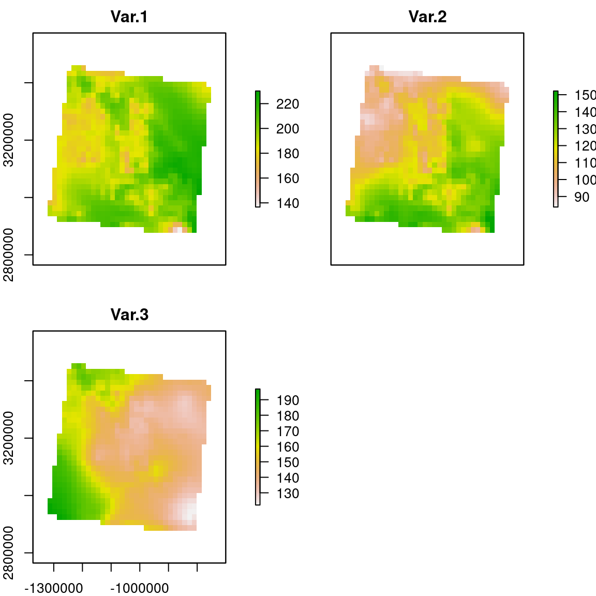
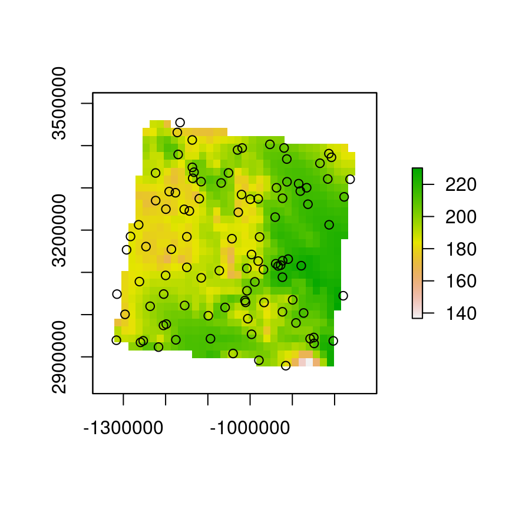

7 Unidad V: El desarrollo de un modelo de nicho o de distribución
7.1 Selección de proyección geográfica
La tierra es un elipsoide, y uno de los retos geométricos más grandes es la representación de su superficie como un plano. Para entender la complejidad del problema, pensemos en la tierra como una pelota de playa que cortamos y tratamos de extender sobre una mesa. En este proceso nos damos cuenta de que obtenemos algunas porciones del material bien extendidas y otras con arrugas. Esto mismo sucede cuando intentamos representar la tierra como una superficie plana. Para solucionar este problema se han propuesto varias soluciones, proyectando la superficie terrestre en diferentes formas geométricas como:
- Plano tangente a algún punto específico
- Cono que toca la superficie terrestre en algún paralelo
- Cilindro que toca la superficie en el ecuador
Todas estas metodologías resultan en distorsiones diferentes, como de áreas o ángulos. Es imposible representar correctamente todos estos aspectos, de modo que es importante seleccionar adecuadamente la proyección para hacer nuestros análisis. En el análisis de procesos de puntos el interés es la densidad por unidad de área, de modo que siempre tenemos que buscar una proyección que conserve las áreas a expensas de la representación adecuada de los ángulos.
Las proyecciones que conservan las áreas llevan nombres como Equal area, y las hay desarrolladas para regiones específicas. Puedes visitar esta página para ver cómo las diferentes proyecciones afectan la representación de la superficie terrestre.
Para ayudarnos a seleccionar el sistema de proyección adecuado para nuestros análisis, necesitamos identificar el nombre de la proyección que necesitamos. La gran mayoría de los datos geográficos disponibles están en proyección WGS84, que es una proyección cilíndrica. Existe una base de datos de proyecciones geográficas con códigos de identificación que se llaman EPSG. En esta biblioteca de proyecciones el código EPSG para la proyección WGS84 es EPSG 4326. Todas las proyecciones tienen un identificador EPSG, y están desarrolladas para representar lo mejor posible las áreas ó formas de regiones geográficas específicas. Para regiones cerca del ecuador, las proyecciones cilíndricas son las más adecuadas, a latitudes medias las cónicas y para los polos las proyecciones planares (tangentes a las superficie).
{kind=link}
Las proyecciones diseñadas para México están agrupadas con el nombre ITRF2008. Para buscar los identificadores EPSG puedes dirigirte a https://epsg.io/ y hacer la búsqueda específica para el país donde harás el análisis. Una vez obtenidos los resultados, las proyecciones geográficas con áreas iguales se pueden filtrar en el menú a mano derecha bajo la liga “projected”.
Figura 7.1: Página de la biblioteca de EPSG, con la búsqueda para México.
Una vez filtrada la búsqueda para sistemas de coordenadas proyectadas, podemos dar click en las ligas “Get position on a map” para identificar la región geográfica para la cual fue diseñado ese sistema. En el ejemplo seleccioné el último elemento de la lista, que optimiza la representación de la península de Yucatán.
Figura 7.2: Liga para ver la región geográfica
Figura 7.3: Región geográfica para la proyección ITRF2008 centrada en la península de Yucatán, con identificador EPSG número 6371.
7.1.1 Transformando los sistemas de coordenadas en R
Para hacer transformaciones de coordenadas en R es necesario, primero que nada, indicarle a R cuál es el sistema de coordenadas de los datos a convertir. Este paso se hace al inicio del script donde comenzamos los análisis de modo que todos los pasos posteriores se hagan con los datos en la proyección correcta.
Como ejemplo veamos la transformación de las capas raster que hemos estado utilizando en todos los ejemplos. Comenzaremos por preguntarle a R cuál es la proyección actual:
proj4string(s)## [1] "+proj=longlat +datum=WGS84 +no_defs"En este caso, no tenemos que indicar la proyección, por lo que podemos hacer la transformación:
s.it08 <- projectRaster(s, crs = CRS("+init=epsg:6371"))
plot(s.it08)
Para transformar los puntos necesitamos una función distinta, y en este caso, sí declarar la proyección inicial de los puntos, después de transformarlos en un objeto espacial:
puntos <- read.csv("../Datos-ejemplos/Puntos-tutorial-2.csv")
coordinates(puntos) <- ~x+yDeclaración de la proyección, la cual es WGS (EPSG4326):
proj4string(puntos) <- CRS("+init=epsg:4326")Transformación al nuevo sistema de coordenadas:
puntos.it08 <- spTransform(puntos, CRSobj = CRS("+init=epsg:6371"))Ahora comprobamos que los puntos estén dentro de la ventana de trabajo:
plot(s.it08[[1]]); points(puntos.it08)
7.2 Selección de variables ambientales
Para ajustar un modelo de puntos necesitamos identificar las variables ambientales que incluiremos con sus fórmulas respectivas. Hasta este momento nos hemos enfocado en ajustar modelos muy sencillos con pocas variables, por lo que aún nos queda por identificar una serie de variables adicionales que podrían explicar la correlación espacial de nuestros datos. El procedimiento para identificar más variables ambientales es el mismo que anteriormente, pero necesitamos comenzar con un objeto del tipo stack que contenga más variables.
En 2005 Robert Hijmans publicó la famosa base de datos WorldClim, donde desarrolló un conjunto de 19 variables compuestas que denominó variables bioclimáticas, que representar diferentes combinaciones de temperatura y precipitación, una en relación a la otra. La lista completa de variables bioclimáticas es:
- bio1 = Temperatura anual promedio
- bio2 = Rango diurno de temperatura (promedio de temperatura máxima - mínima)
- bio3 = Isotermalidad (bio2/bio7) (* 100)
- bio4 = Estacionalidad de la temperatura (Desviación estándad \(\times 100\))
- bio5 = Temperatura máxima del mes más cálido
- bio6 = Temperatura mínuma del mes más frío
- bio7 = Rango anual de temperatura (bio5-bio6)
- bio8 = Temperatura promedio del cuarto más húmedo
- bio9 = Temperatura promedio del cuarto más seco 10 bio10 = Temperatura promedio de cuarto más húmedo
- bio11 = Temperatura promedio del cuarto más frío
- bio12 = Precipitación anual total
- bio13 = Precipitación del mes más húmedo 14 bio14 = Precipitación dle mes más seco
- bio15 = Estacionalidad de la precipitación (coeficiente de variación)
- bio16 = Precipitación del cuarto más húmedo
- bio17 = Precipitación del cuarto más seco 18 bio18 = Precipitación del cuarto más cálido
Como resulta evidente agunas de estas variables bioclimáticas son construidas con base en otras variables bioclimáticas (bio3 y bio7, p. ej.). Por ello, algunas de estas están correlacionadas y no deben ser incluidas en el mismo modelo:
- bio3 es incompatible con bio2 y bio7 simultáneamente
- bio7 es incompatible con bio 5 y bio6 simultáneamente
Entonces el proceso de identificación de variables tiene que tomar en cuenta esta colinealidad de facto y toda aquella que pueda ser identificada estadísticamente.
Además de estos estas cualidades de las que debemos estar conscientes, también es necesario tomar en cuenta que algunas de las variables bioclimáticas suelen tener artefactos espaciales, es decir características geográficas que no representan atributos reales de la variación espacial del clima. Estos artefactos se presentan más comunmente en las variables bio8, bio9 y bio14. Entonces, antes de comenzar con la selección de variables bioclimáticas, es buena práctica revisar si estas variables presentan los artefactos mencionados para el área de estudio (ejemplo).
{kind=link}
Para hacer la lista de variables compatibles, podemos utilizar las gráficas de correlación por pares, como se ha mostrado anteriormente. A partir de estas gráficas comenzamos a hacer la lista de variables compatibles entre sí con base en un coeficiente de correlación tolerado. Como regla de dedo utilizamos el valor \(-0.7 \geq r \leq 0.7\).
Las listas de covariables compatibles pueden ser formuladas con el reemplazo de variables no compatibles entre sí. Por ejemplo, si bio1 y bio5 están correlacionadas entre sí, pero ninguna de las dos está correlacionada con bio2, y bio3, las listas de variables compatibles sería:
- bio1, bio2 y bio3
- bio2, bio3 y bio5
- bio1, bio2
- bio1, bio3
- bio2 y bio3
- Todas las combinaciones que surjan
Con base en estas listas y las gráficas de intensidad de puntos en relación a las diferentes variables podemos proponer las fórmulas para los modelos basadas en los tipos de respuestas que identifiquemos.
7.3 Validación del modelo
La validación de un modelo es un paso crítico en el proceso del desarrollo. En modelación correlativa de nichos ecológicos hay prácticas estándar que consisten de:
- Proponer modelo
- Dividir presencias es datos de ajuste y de validación
- Medir capacidad predictiva de un modelo utilizando los datos de validación
- Seleccionar modelo que mejor prediga los datos de validación
Estas metodologías han sido desarrolladas así porque herramientas herramientas espacialmente explícitas y estadísticamente robustas como los procesos de puntos no se habían adoptado en ecología hasta hace unos 10 años que se demostró que son equivalentes a metodologías de aprendizaje de máquinas desarrolladas específicamente para modelar distribuciones de organismos como MaxEnt (Renner and Warton 2013)